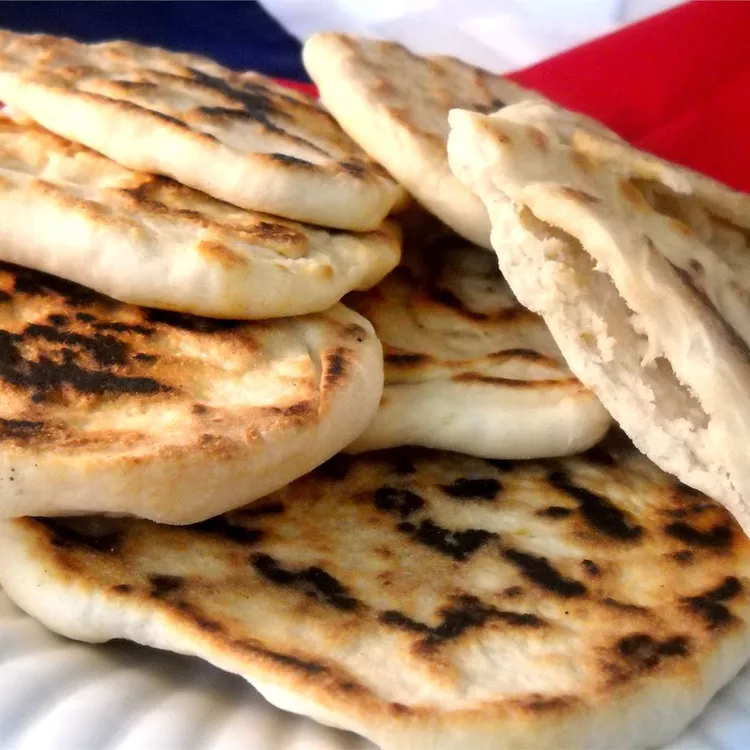

Homemade Bread

What is homemade bread?
Homemade pita bread is a type of flatbread that is popular in Middle Eastern and Mediterranean cuisines. It's known for its light, airy texture and a pocket that forms in the middle when it's baked at a high temperature. The basic ingredients are similar to other breads, typically including flour, water, yeast, and salt. Some variations might include a bit of sugar, oil, or whole wheat flour.
To make pita bread at home, you mix the ingredients to form a dough, then knead it until it's smooth and elastic. After letting the dough rise until it doubles in size, it's divided into small balls, which are then rolled into flat, round shapes. The key to getting the distinctive pocket in pita bread is to bake it at a high temperature for a short amount of time, often in a preheated oven or on a baking stone. This intense heat causes the moisture in the dough to turn into steam quickly, puffing up the bread and creating the hollow center.
Homemade pita can be served fresh and warm, used for sandwiches, or paired with dips like hummus or baba ganoush. Making pita bread at home allows for customization in terms of size, thickness, and flavor, and provides a fresh, preservative-free alternative to store-bought versions.
Ingridients:
- 1 (.25 ounce) package active dry yeast
- 1 cup warm water
- 1 cup all-purpose flour
- 1 ½ tablespoons olive oil
- 1 ¾ teaspoons salt
- 1 ¾ cups all-purpose flour, or more as needed
- 1 teaspoon olive oil, divided
Step by step guide to make this recipe:
- Place yeast in the bowl of a stand mixer and add 1 cup warm water and 1 cup flour. Whisk together, then let sit until mixture bubbles and foams, 15 to 20 minutes.
- Add 1 1/2 tablespoons olive oil and salt into the yeast mixture, followed by 1 3/4 cups flour. Mix at low speed, using a dough hook attachment, until dough is soft, supple, and slightly sticky. If dough sticks to the sides of the bowl, add up to 1/4 cup more flour, a little at a time.
- Knead dough with machine on low speed until slightly springy and still soft, 5 to 6 minutes. Turn dough out onto a floured work surface and form into a ball.
- Wipe inside of bowl with 1/4 teaspoon olive oil. Turn dough around in bowl to cover with a thin film of oil; cover bowl with foil and let sit until dough has doubled in size, about 2 hours.
- Remove dough from bowl and place onto a floured work surface. Lightly pat into a flat shape about 1-inch thick. Use a knife to cut dough into 8 equal pieces.
- Form each piece into a small round ball with a smooth top, pulling dough from the sides and tucking the ends underneath the bottom.
- Cover dough balls with lightly oiled plastic wrap and let rest for 30 minutes.
- Transfer the dough balls to a lightly floured work surface and sprinkle the tops with flour. One at a time, gently pat the dough with your fingers, forming a flat, round bread about 1/4-inch thick. Let the shaped dough rest for 5 minutes.
- Brush a cast iron skillet with remaining 3/4 teaspoon olive oil and place over medium-high heat. Lay dough into the hot skillet; cook until puffy and the bottom has brown spots and blisters, about 3 minutes. Flip, cook 2 more minutes, and flip back onto original side to cook for about 30 more seconds. Pita bread will begin to puff up and fill with hot air. Stack cooked breads on a plate; when cool enough to handle, slice breads in half and open the pocket inside for stuffing.